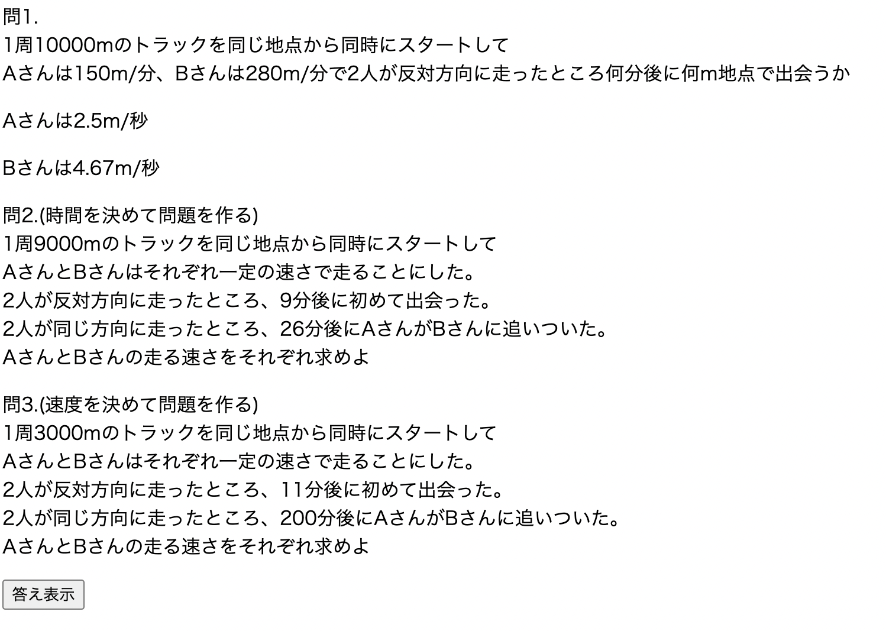
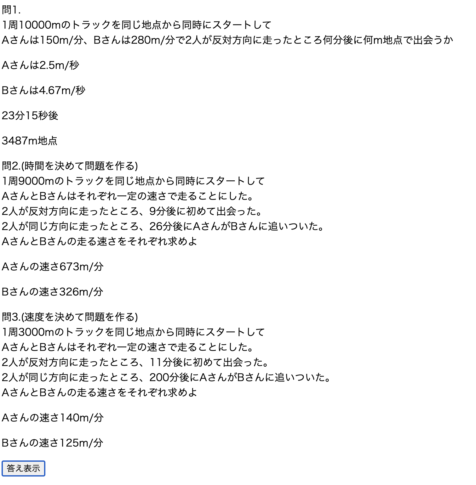

戻る
連立方程式
【内容】
中学生レベルの連立方程式をプログラミングしてみた。

【構成】
問1
①「トラックの距離」②「Aの速さ/分」③「Bの速さ/分」
をランダムに算出する(AとBの速さ同じにならずAの方が早くなる仕様)
↓
割り切れるとも限らないので秒速を算出しておく
↓
② + ③ = ① の場合に合流なので、
式に基づいて答えを算出する
問2
①「トラックの距離」②「反対方向から走って合流する時間」③「同じ方向に走って合流する時間」
をランダムに算出する
↓
a(②) b(③) c(①) x(Aの速さ) y(Bの速さ) とすると
ax + ay = c(問1と同じく反対方向に走って合流)
bx - by = c(同じ方向に走って合流 = 1周差をつけた)
組み替えると
x = (ac + bc) / 2ab
y = (bx - c) / b
となるのでこの式に当てはめて答えを算出する
問3
①「トラックの距離」②「Aの速さ/分」③「Bの速さ/分」
を先に算出して問題を作ってみる
↓
問2でいえば x(②)とy(③)がすでにわかっているので
ax + ay = c
bx - by = c
から時間(aとb)をそれぞれ求める
【工夫や学び】
問2でアルゴリズムを式に落とし込むことができて嬉しかった。
しかしこのアプリにおいては「時間」を先に定めてしまうと、
答えのAとBの速さが人外な数値になってしまい現実的ではないと感じた
となると問題生成アプリを作成するのであれば問3のように
答えを先に作りそれに合わせて問題を作るの方が違和感がなく、
式も複雑ではなくて簡単ではないかと感じた製作であった。
